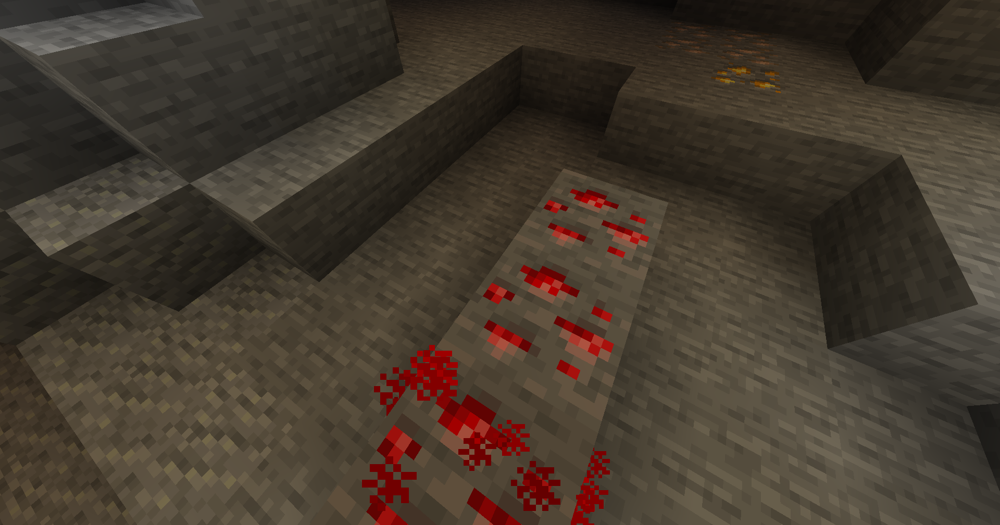

Redstone is the building block for anything mechanical, technical, or computational and is the minecraft equivalent to electricity. Redstone can be found at Y layer 15 - -64(minecraft fandom) and looks like this...

from universe.roboflow.com, by mineguide
Redstone can be placed, but for it to do anything, it needs to be powered. Power sources can include...
Note: Redstone torches can be inverted to not powering if they are powered
go to the home page go back to the top What redstone does Miscellaneous Good beginer builds